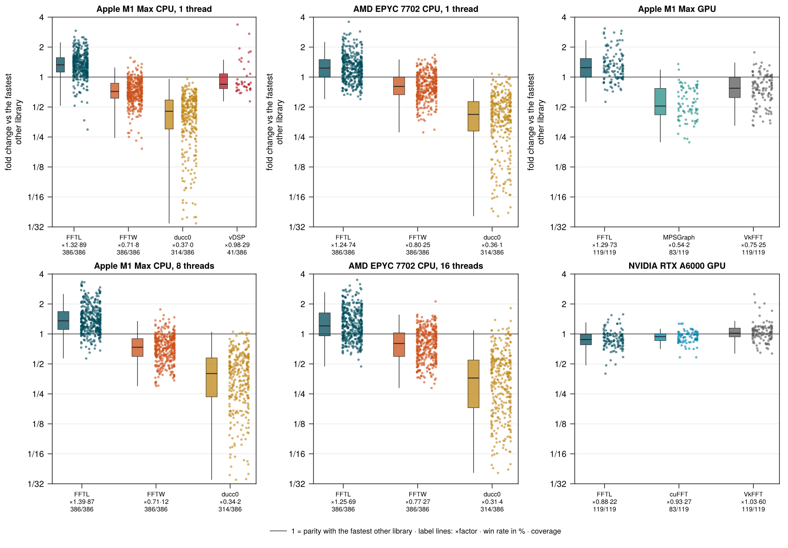
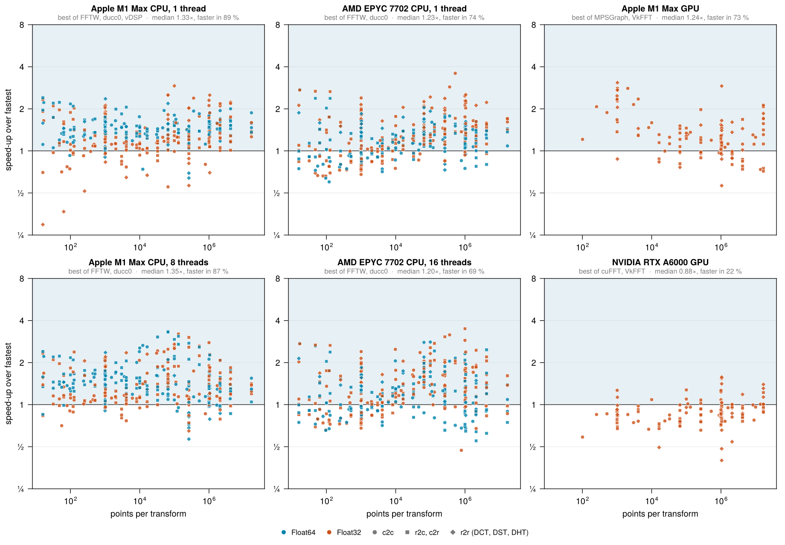

Benchmarks
The figures and numbers on this page are the development state: one round per case, measured on the machines listed at the bottom under their normal load, at the commits given with each figure. The measurement campaign on quiet machines will replace them; the protocol below is already the one the campaign follows.
Which library to depend on

This figure asks the question a package author faces: which single library to depend on. Per case, the fold change is the time of the fastest other library divided by this library's time; right of the parity line is a win, left of it a loss, and wins are not clipped at 1. The box is the quartile rectangle with the median line and Tukey whiskers, the points are the raw cases. Colour is one Uni Lübeck family per library, FFTL in the house colour Ozeangrün — the two figures of this page encode different things in colour: the library here, the precision in the figure below. The label under each column carries the fold factor (the geometric mean of the fold changes over the cases the library itself computes), the win rate, and the coverage: libraries that lack transform kinds (ducc0 without DCT/DST, vDSP with c2c and DCT-II only, MPSGraph and cuFFT without real-to-real at all) compute their factor over a smaller subset, so the coverage is part of the label.
FFTL is the only library that runs on all six panels and computes every kind. Its fold factor is 1.23–1.39× on the CPUs and the Apple GPU and 0.88× on the A6000, the exception below; no other library comes with full coverage and full kind support (see Platforms and limits).
How FFTL compares

The speed-up is the time of the fastest other library for that case divided by FFTL's time; above 1 (shaded), FFTL is faster. One marker per transform — colour: precision, shape: kind; open triangles at the panel edge mark values beyond the axis. In the two multi-thread panels every library is timed at its better setting per case, the minimum over one and all threads, so FFTW is not charged for spreading tiny transforms over many threads. Transforms that no competitor computes (DCT and DST in cuFFT and MPSGraph, most real-to-real kinds) are not plotted. The data is the overview set in bench/results, measured at FFTL 9e9bcc2/fec5b70 on the M1, f825bee on the EPYC and 49648b3 on the A6000 (the .meta files carry the exact provenance: commit, machine, load); the figures are regenerated from it on every documentation build.
With one thread, FFTL is faster than the best of FFTW, ducc0 and vDSP in 89 % of the cases on the M1 (median 1.33×) and in 74 % on the EPYC (1.23×). With many threads, at each library's better setting, the lead grows: 87 % on the M1 with 8 threads (1.35×) and 69 % on the EPYC with 16 threads (1.20×). On the Apple GPU, against the best of MPSGraph and VkFFT, the median is 1.24× with 73 % of the cases faster. On the NVIDIA A6000 the median is 0.88×: small transforms are launch-bound and the DCT kinds were tuned last (see Platforms and limits).
What the release covers
- Complex, real and real-to-real transforms on the CPU, 1D to 3D, Float32 and Float64, against the competitors that support the same kind. Each kind has its own column; kinds without a competitor are shown separately.
- Threads. The same sizes with one thread and with the number of threads of the machine, with the noise band of each machine.
- GPU. Complex, real and real-to-real transforms against the vendor library (cuFFT on CUDA, MPSGraph and Metal.jl's FFT on Metal) and against VkFFT.
- libfftl. The C library against the Julia package, to show that the library costs nothing.
- Planning. The cost of the first plan in a fresh process, separate from the execution time.
- Accuracy. Error against a high-precision reference over the same sizes.
How it is measured
The protocol is described on the Performance page: A/B runs on the same machine, medians of interleaved runs, A/A runs for the noise band, and sizes reported separately from the sizes used for tuning.
Machines
| machine | role |
|---|---|
| Apple M1 Max | development machine, CPU and Metal GPU |
| AMD EPYC (2 sockets) | CPU server, x86-64 with AVX2 |
| NVIDIA RTX A6000 | CUDA GPU |
Each result names the library, its version, the build flags and the thread count. Competitors are built from their current releases with native CPU flags.
Status
| part | status |
|---|---|
| harness, protocol and figures | prepared |
| campaign (quiet machines, several rounds, held-out sizes) | planned |
The figures above are the development state and are regenerated from the committed overview data on every build. The campaign results replace them with the first release that carries them; the functions themselves are documented and tested already.